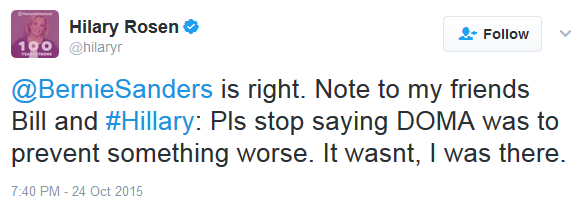

"Well, I – I want to say a word about the – the issues you mentioned, because my – my – my take on it is slightly different.
On Defense of Marriage, I think what my husband believed – and there was certainly evidence to support it – is that there was enough political momentum to amend the Constitution of the United States of America, and that there had to be some way to stop that.
And there wasn’t any rational argument – because I was in on some of those discussions, on both “don’t ask, don’t tell” and on – on DOMA, where both the president, his advisers and occasionally I would – you know, chime in and talk about, “you can’t be serious. You can’t be serious.”
But they were. And so, in – in a lot of ways, DOMA was a line that was drawn that was to prevent going further."
~ Hillary Clinton, October 23, 2016 Rachel Maddow Interviews Hillary Clinton
On Oct 25, 2015, at 3:48 PM, Jake Sullivan <jsullivan@hillaryclinton.com> wrote:
Adding Tony, who recalls this from ’08 when she made a similar argument. We did not turn up much to support idea that alternative was a constitutional amendment.
Also adding Schwerin. I think we should pull her statements around the time she embraced marriage equality and place greatest emphasis on the fact that she fully acknowledges that she evolved.
I’m on calls next two hours but Maya has my proxy.
*From:* Jennifer Palmieri [mailto:jpalmieri@hillaryclinton.com]
*Sent:* Sunday, October 25, 2015 3:46 PM
*To:* Brian Fallon <bfallon@hillaryclinton.com> John Podesta <jp66@hillaryclinton.com> Robby Mook <re47@hillaryclinton.com> Kristina Schake <kschake@hillaryclinton.com> Maya Harris <mharris@hillaryclinton.com> Jake Sullivan <jsullivan@hillaryclinton.com> Marlon Marshall <mmarshall@hillaryclinton.com> Heather Stone <hstone@hillaryclinton.com>
*Subject:* one chain on DOMA
Think all of us are getting incoming from friends in LGBT community about DOMA comments.
HuffPo has reached out to us. I heard from Socarides that NYT was doing something.
I have no understanding of the issue – but clear this has a head of steam.
Brian can put a statement out, but policy and political need to tell us what you want us to do.
I would suggest a conference call with relevant parties for how we are going to handle all around – press, groups, politics. I have a bad schedule for rest of day and may not be able to be on such a call but don’t think I am needed. We just need guidance and then on political end think we need a plan for how to hose down anxious friends.
On Sunday, October 25, 2015, Maya Harris <mharris@hillaryclinton.com> wrote:
From Richard:
Since I was asked on Friday about the Defense of Marriage Act in an interview on MSNBC, I've checked with people who were involved then to make sure I had all my facts right. It turns out I was mistaken and the effort to pass a constitutional amendment banning same-sex marriage came some years later. The larger point I was trying to make about DOMA, however, is still true. It was neither proposed nor supported by anyone in the Clinton administration at the time. It was an effort by the Republicans in Congress to distract attention from the real issues facing the country by using gay marriage, which had very little support then, as a wedge issue in the election. The legislation passed by overwhelming veto-proof margins in both houses of Congress and President Clinton signed it with serious reservations he expressed at the time. Luckily the country has evolved way beyond this in the last 20 years and most Americans, including the Supreme Court, now embrace LGBT equality. We are a better country for it. Although there is much work that remains, and I'm eager to help advance the day when we are all truly equal.
*From:* Dan Schwerin [mailto:dschwerin@hillaryclinton.com]
*Sent:* Sunday, October 25, 2015 6:56 PM
*To:* Amanda Renteria <arenteria@hillaryclinton.com>
*Cc:* Dominic Lowell <dlowell@hillaryclinton.com> Karen Finney <kfinney@hillaryclinton.com> Maya Harris <mharris@hillaryclinton.com> Heather Stone <hstone@hillaryclinton.com> Robby Mook <re47@hillaryclinton.com> Jake Sullivan <jsullivan@hillaryclinton.com> Jennifer Palmieri <jpalmieri@hillaryclinton.com> Brian Fallon <bfallon@hillaryclinton.com> Kristina Schake <kschake@hillaryclinton.com> Marlon Marshall <mmarshall@hillaryclinton.com> Tony Carrk <tcarrk@hillaryclinton.com> Brynne Craig <bcraig@hillaryclinton.com> Sally Marx <smarx@hillaryclinton.com> Teddy Goff <tgoff@hillaryclinton.com> John Podesta <john.podesta@gmail.com> Christina Reynolds <creynolds@hillaryclinton.com>
*Subject:* Re: one chain on DOMA
I think everyone agrees we shouldn't restate her argument. Question is whether she's going to agree to explicitly disavow it. And I doubt it.
On Oct 25, 2015, at 6:53 PM, Amanda Renteria <arenteria@hillaryclinton.com> wrote:
There is no way we have friends to back us up on her interpretation. This is a major problem if we revisit her argument like this. It's better to do nothing than to re-state this although she is going to get a question again.
Working w Dominic now.
Sent from my iPhone
On Oct 25, 2015, at 6:34 PM, Dan Schwerin <dschwerin@hillaryclinton.com> wrote:
I'm not saying double down or ever say it again. I'm just saying that she's not going to want to say she was wrong about that, given she and her husband believe it and have repeated it many times. Better to reiterate evolution, opposition to DOMA when court considered it, and forward looking stance.
On Oct 25, 2015, at 6:28 PM, Dominic Lowell <dlowell@hillaryclinton.com> wrote:
Jumping on a call with the kitchen cabinet now to give them an update. Will turn to this ASAP.
The most recent Blade article has Elizabeth Birch quoted as saying there was no amendment threat in 1996. Hilary Rosen has already tweeted the same. I'll ask on the call, but my sense is that there aren't many friends who will back us up on the point. That's why I'm urging us to back off as much as we can there.
More soon.
On Sunday, October 25, 2015, Dan Schwerin <dschwerin@hillaryclinton.com> wrote:
I'd welcome specific edits. I'm fine not mentioning WJC if that's problematic, but my two cents is that you're not going to get her to disavow her explanation about the constitutional amendment and this exercise will be most effective if it provides some context and then goes on offense.
On Oct 25, 2015, at 6:15 PM, Karen Finney <kfinney@hillaryclinton.com> wrote:
If the criticism is that she has said before and reiterated on Friday then hit by Bernie yesterday is t that the context?
Sent from my iPhone
On Oct 25, 2015, at 6:00 PM, Dominic Lowell <dlowell@hillaryclinton.com> wrote:
Sorry, on phone so focused more on overall thoughts than line edits. Can call you directly if any of this is unclear. Sending to all so people can react, push back, etc.
I originally flagged HRC's Maddow remarks as potentially problematic in part because her wording closely linked her to two unfavorable policies of the past even as no one in the community was asking her to "own" them. Given that, my recommendation would be to make this statement about just her, her evolution, and her record -- not bring in WJC.
Relatedly, if we release a statement tonight, it will very clearly be in response to the Maddow interview. To the extent we can, I advocate for owning that so that we can clean this up completely, rightly position her as a champion of LGBT issues, and make sure we move on from any discussion of looming amendments or her being involved in passing either DADT or DOMA. Without getting into the weeds, can we say that the broader point is that the country is in a different place now on LGBT issues -- and thank goodness it is -- and that she's so happy each policy has been placed in the dustbin of history?
Last thought: I have raised this a few times to a smaller number of people on this thread but will flag this for the larger group as well. At Keene State College, she specifically cited friends playing a part in her evolution, which we echo here. That's fine, IMO, and quite believable. But if I were a reporter and wanted to keep the evolution story alive, I would start asking which friends she was talking to and ask us to provide them. Not a problem per se, but I think it is worth flagging now so we aren't caught by surprise later.
--
Dominic Lowell
LGBT Outreach Director | Hillary for America
661.364.5186
dlowell@hillaryclinton.com--
Dominic Lowell
LGBT Outreach Director | Hillary for America
661.364.5186
dlowell@hillaryclinton.com
On Oct 25, 2015, at 6:57 PM, Tony Carrk <tcarrk@hillaryclinton.com> wrote:
And also for awareness for everyone to have, attached are HRC’s comments on DOMA Carter from my team put together.
<HRC DOMA.DOCX>
HRC DOMA.DOCX - Wikileaks - The Podesta EmailsHillary Clinton on the Defense of Marriage Act (DOMA)
2014 Terry Gross Interview
Clinton: “What DOMA Did Is At Least Allow The States To Act. It Wasn’t Going Yet To Be Recognized By The Federal Government, But At The State Level There Was The Opportunity.” “QUESTION: So you mentioned that you believe in state by state for gay marriage, but it’s the Supreme Court too. The Supreme Court struck down part of DOMA, the Defense of Marriage Act, which prevented the federal government from recognizing gay marriage. That part is now struck down. And DOMA was actually signed by your husband when he was President. In spite of the fact that he signed it, were you glad at this point that the Supreme Court struck some of it down? MRS. CLINTON: Of course. And again, let’s – we are living at a time when this extraordinary change is occurring, and I’m proud of our country, I’m proud of the people who have been on the front lines of advocacy. But in 1993, that was not the case. And there was a very concerted effort in the Congress to make it even more difficult and greater discrimination. And what DOMA did is at least allow the states to act. It wasn’t going yet to be recognized by the federal government, but at the state level there was the opportunity. And my husband was the first to say that the political circumstances, the threats that were trying to be alleviated by the passage of DOMA thankfully were no longer so preeminent and we could keep moving forward, and that’s what we’re doing.” [Hillary Clinton interview with NPR’s Terry Gross, 6/11/14]
2008 Campaign
Editorial Board Interview
Asked If She Would “Sign A Repeal” Of DOMA, Clinton Said, “No. But I Would Sign A Repeal Of Section Two And Section Three.” “Q: President Clinton signed the Defense of Marriage Act. Would you sign a repeal of it? HRC: No. But I would sign a repeal of section two and section three… I would repeal the prohibition on federal benefits because if you are legally joined in a state, then I do not believe the federal government has a right to deny either partner access to the benefits that you would be entitled to. So that’s how I see it, but I would maintain the federal government is not going to get involved in this because I think that hopefully we won’t face this again, hopefully we will not have any Republican president or a Republican Congress pushing this but I want to be safe and make sure we don’t give them a big hole to drive a constitutional amendment through.” [Hillary Clinton interview with Concord Monitor Editorial Board, 12/21/07]
Clinton: “Because Of The Defense Of Marriage Act, We Were Able To Stave Off The Constitutional Amendment.” “You know, the defense of marriage act, codified, the, number one, the understanding that marriage was a state responsibility. Because of the Defense of Marriage Act, we were able to stave off the constitutional amendment. It seems like ancient history now, but it was touch and go there for a few years, with all the Republican party push on state referendum, some of the people running for office right now on the Republican side are making it a major part of their campaign. So we could stand against the Constitutional Amendment by saying it’s not necessary, you know, states can pursue whatever route they wish to take in their marriage laws, and then it went further and said that no other state will have to recognize that. And then it went even further and said and we will also not give any federal benefits to anyone who has any kind of civil union/marriage that is recognized by a state. So I would say look we’re going to leave it to the states, but we’re going to recognize the right of states, in their own legal processes to decide whether they want to recognize the relationship in another state. You know, if you’re married in Massachusetts or civil-unionized in New Hampshire, Vermont should have a choice as to whether they accept that kind of legal status from both of those states.” [Hillary Clinton interview with Concord Monitor Editorial Board, 12/21/07]
Asked Whether DOMA Is In “Conflict With The Constitution’s Full Faith And Credit Law,” Clinton Said “It Is Going Through Litigation Now… It May Be, But Until Challenged, It Doesn’t Pose That Difficulty To People Who Are Still Concerned About This Issue And Not Sure What To Do.” “Q: I’ve never understood why either the law as currently written or either a provision (inaudible) Why is that not conflict with the Constitution’s Full Faith and Credit Law? HRC: Well, it, it is going through litigation now, I don’t remember exactly where. And, I think the argument is that it may be, but until challenged, it doesn’t pose that difficulty to people who are still concerned about this issue and not sure what to do. Because when you say they don’t have to, you’re giving them a state option. So you could argue that that’s inline with the powers reserved to the state and the Constitution. You could argue the other side and say well full faith and credit applies to everything else, so why this one area. That’s the nub of the sort of judicial dispute.” [Hillary Clinton interview with Concord Monitor Editorial Board, 12/21/07]
Clinton Said DOMA “May Be Something That In A Few Years Is No Longer Necessary, But Right Now I Think, It Helps To Prevent This Becoming Another Mean Spirited Effort To Enshrine Discrimination In The Constitution.” “I believe that as a practical matter, it’s been very helpful to have the Defense of Marriage Act for all the reasons that I said. It may be something that in a few years is no longer necessary, but right now I think, it helps to prevent this becoming another mean spirited effort to enshrine discrimination in the Constitution which is really my biggest concern that I’m trying to prevent.” [Hillary Clinton interview with Concord Monitor Editorial Board, 12/21/07]
Clinton: “We Had A Choice. The Choice Was Do You Try To Continue To Give That Authority To States, And Avoid The Constitutional Amendment That Would Literally Take The Power From States.” “Q: I certainly understand the political argument, but it does seem like you’re basically saying to a small segment of the population, that your rights just have to wait while we settle the politics. HRC: Well but no I don’t think that’s right because marriage has always been left to the states. You know, I think, and I’m not an expert on this, but I think that you could go and look at marriage law and you could find some states that let people in past years marry at the age of 14 and other states that said no they wouldn’t recognize it and I think that is within the tradition of state control over marriage, unlike a lot of other things. And so we had a choice. The choice was do you try to continue to give that authority to states, and avoid the Constitutional amendment that would literally take the power from states.” [Hillary Clinton interview with Concord Monitor Editorial Board, 12/21/07]
Clinton: “Since States Always Had That Right, And Were Given A Great Deal Of Latitude, It Was Primarily About Age, Once We Eliminated The Discrimination About Inter-Racial Marriages, It Was Really Kind Of Left To Age And Polygamy, And Things Like That.” “And if you look at what happened in ’04, with all of the state referenda that were passing and all the amending of state constitutions, there was certainly a huge momentum behind that, which I hope has receded. But since states always had that right, and were given a great deal of latitude, it was primarily about age, once we eliminated the discrimination about inter-racial marriages, it was really kind of left to age and polygamy, and things like that. So, once we said look, we’re going to get back to what has always worked, states can do whatever they want, but a state doesn’t have to recognize what that other state has done. I think that was a good position for us to be in to let this issue kind of play itself out in the states which is what is happening now.” [Hillary Clinton interview with Concord Monitor Editorial Board, 12/21/07]
HRC Questionnaire
Clinton: “I Support Repealing The Provision Of DOMA That May Prohibit The Federal Government From Providing Benefits To People In States That Recognize Same Sex Marriage.” “I have long been on record supporting equality in benefits and eliminating discrimination against gays and lesbians. I support repealing the provision of DOMA that may prohibit the federal government from providing benefits to people in states that recognize same sex marriage. I strongly support ensuring people in stable, long-term same sex relationships have full equality of benefits, rights and responsibilities.” [Hillary Clinton Human Rights Campaign Questionnaire, 2008]
Press Accounts
Spokesman: Clinton Supported DOMA In Order To Prevent The Federal Marriage Amendment. Clinton spokeman Phil Singer adds, "Sen. Clinton backed the Defense of Marriage Act because it enabled us to fend off right wing attacks like the Federal Marriage Amendment by keeping marriage as the purview of the states. She believes DOMA served an important purpose in that respect. Marriage should be left up to the states.” [Politico, 6/3/07]
Politico: “Only Obama Favors Repealing DOMA Entirely. Clinton Favors Keeping The Part That Protects States’ Rights To Refuse To Recognize Other States’ Gay Marriages.” “Clinton remains clearly to his right on several issues that have gone largely unnoticed but are quite important - especially to many Democratic primary voters. Gay Marriage: Both Clinton and Obama oppose gay marriage and support civil unions, but Clinton’s opposition is stronger than Obama’s in one key way. If a same-sex couple gets married in a state allowing gay marriage, under the federal Defense of Marriage Act, the federal government cannot recognize that marriage, and other states can choose not to recognize it. Both Clinton and Obama favor changing DOMA to let the federal government recognize states’ same-sex marriages, but only Obama favors repealing DOMA entirely. Clinton favors keeping the part that protects states’ rights to refuse to recognize other states’ gay marriages.” [Politico, 2/18/08]
HRC/LOGO Forum
Clinton: “When You And I Were Plotting Strategy To Beat The Federal Marriage Amendment, The Reason We Were Plotting Strategy Is We Were Worried It Was Going To Pass… I Don't Know That We Could Have Defeated It If We Had Not Had DOMA.” “SOLMONESE: I wonder, Senator, if you can sympathize with the frustration of this argument that it's a states' rights issue. In the civil rights struggle, this argument that it was a states' rights issue was something that was typically used against people working against us as sort of a red herring. And so can you see where this argument of marriage as a states' right issue would resonate the same way in our community? CLINTON: Absolutely. And Joe, not only that, I really respect the advocacy that the community is waging on behalf of marriage. I think you're doing exactly what you need to do and should do, and I really am very much impressed by the intensity and the persistence of that advocacy. But this has not been a long-term struggle yet. And I think it's really clear that people in the states are moving much more rapidly to deal with the inequality than you would find at the federal level. When you and I were plotting strategy to beat the federal marriage amendment, the reason we were plotting strategy is we were worried it was going to pass. And, again, this was a terrifying prospect that we would have enshrined in the Constitution for the first time ever discrimination. And we were very clear about what we needed to do to get the vote in order to prevent this mean-spirited, divisive effort led by Karl Rove to politicize the hopes and dreams of so many of our fellow Americans. And we were able to defeat it, but I don't know that we could have defeated it if we had not had DOMA. That, if anything, has provided a great protection against what was clearly the Republican strategy blessed by George Bush, led by the congressional Republicans, to just cynically use marriage as a political tool.” [HRC/LOGO Forum, 8/9/07]
Clinton: “I Want To Repeal Section 3 Of DOMA, Which Stands In The Way Of The Extension Of Benefits To People In Committed Same Sex Relationships, And I Will Be Very Strongly In Favor Of Doing That As President.” “SOLMONESE: Changing tracks, talk to us about what is at the heart of your opposition to same sex marriage? CLINTON: Well, Joe, I prefer to think of it as being very positive about civil unions. (LAUGHTER) It's a personal position, and you and I have talked about it. I've talked about it with a number of my friends here and across the country. And for me, we have made it very clear in our country that we believe in equality. How we get to full equality is the debate we're having. And I am absolutely in favor of civil unions with full equality, full equality of benefits, rights and privileges. And I've also been a very strong supporter of letting the states maintain their jurisdiction over marriage. And I believe that was a right decision for a lot of reasons, because it's easy, again, to forget that just 2.5 years ago, we were facing all of these referenda that were enshrining discrimination in state constitutions. And a lot of people tried very hard to fight against them and prevent them from being passed, but unfortunately, they were. Now, 2.5 years later we're beginning to see other states take different approaches. And what we were able to do -- and I really give HRC a lot of credit for your leadership on this -- in stopping the federal marriage amendment gave the states the breathing room to make different decisions. So I want to proceed with equalizing federal benefits. I want to repeal Section 3 of DOMA, which stands in the way of the extension of benefits to people in committed same sex relationships, and I will be very strongly in favor of doing that as president.” [HRC/LOGO Forum, 8/9/07]
YearlyKos Forum
Clinton: “I Was One Of The Architects In The Strategy Against The Marriage Amendment To The Constitution, And DOMA Gave Us A Bright Line To Be Able To Hold Back The Votes That Were Building Up To Do What I Consider To Be Absolutely Abominable And That Would Be To Amend The Constitution To Enshrine Discrimination.” “I believe that DOMA served a very important purpose. I was one of the architects in the strategy against the Marriage Amendment to the constitution, and DOMA gave us a bright line to be able to hold back the votes that were building up to do what I consider to be absolutely abominable and that would be to amend the constitution to enshrine discrimination. I believe marriage should be left to the states. I support civil unions as I’ve said many times with full equality of benefits and so I think that DOMA appropriately put the responsibility in the states where it has historically belonged and I think you’re beginning to see states take action. I think it’s, I think part three of DOMA needs to be repealed because part three stands in the way of the full extension of federal benefits and I support that. So that’s the first.” [YearlyKos Forum, 8/4/07]
2007: THE RNC ATTACKED HILLARY FOR “REPUDIATING” DOMA
RNC: “Bill Supported DOMA And ‘Don't Ask, Don't Tell’, Hillary Repudiates.” “At Last Night's Debate, Hillary Once Again Pandered To The Liberal Left By Repudiating Another Key Administration Policy Set By Her Husband… Bill Supported DOMA And "Don't Ask, Don't Tell", Hillary Repudiates…” [“Hillary's Liberal Lia-Bill-ity?,” RNC Press release, 8/8/07]
Hillary "Has Rejected" Defense Of Marriage Act And "Don't Ask, Don't Tell" Policies Of The Clinton Administration. "On two major issues, Clinton has rejected two policies of her husband, former president Bill Clinton: the 'don't ask, don't tell' approach to gay people in the military and a provision in the Defense of Marriage Act, which could prevent the federal government from offering equal benefits to same-sex couples." (Perry Bacon Jr., "Democrats Cautious On Gay Rights Issues," The Washington Post, 6/24/07)
"On Gays In The Military, The Latest Subject On Which She Has Diverged From President Clinton's Position, Hillary Clinton Said Gay Men And Women Should Be Allowed To Serve Openly In The Military ..." (Lynne Duke, "'Don't Ask, Don't Tell' Discord," The Washington Post, 12/10/99)
In June 2007, Politico's Ben Smith Reported A Human Rights Campaign Candidate Questionnaire Revealed Clinton Is "Repudiating" Support For The Defense Of Marriage Act Signed Into Law During Her Husband's Administration. "Human Rights Campaign has released the results ... of its candidate questionnaires in the form of a spreadsheet showing that ... all the leading Democrats agree on everything. ... The news, though, seems to be that Hillary is repudiating her long (if tepidly) held support for the Defense of Marriage Act, which her husband signed, and which drew her criticism in New York. Her unadvertised shift is a very big deal, and reflects, among other things, the rapidly shifting national terrain on the issue." (Ben Smith, "Hillary Repudiates DOMA," Politico, 6/3/07)
Hillary Clinton: "I support repealing the provision of DOMA that may prohibit the federal government from providing benefits to people in states that recognize same sex marriage. I strongly support ensuring people in stable, long-term same sex relationships have full equality of benefits, rights, and responsibilities." (Ben Smith, "Hillary Repudiates DOMA," Politico, 6/3/07)
As Senator
2006: Before NY LGBT Advocates, Clinton Reportedly “Described Supporting The Federal Defense Of Marriage Act As A Strategic Decision To Help Derail A Constitutional Amendment That Would Have Banned Gay Marriage.” “The senator listened and spoke for more than an hour with the three-dozen officials from New York, as they sat down — by coincidence — two hours after the New Jersey Supreme Court ruled that gay couples were entitled to the same legal rights and financial benefits as heterosexual couples. They said Mrs. Clinton described supporting the federal Defense of Marriage Act as a strategic decision to help derail a constitutional amendment that would have banned gay marriage. She also said that it was not fair that the gay partner of a late congressman from Massachusetts, Gerry Studds, was not receiving his benefits, participants said.” [“Clinton Wouldn't Block Law if Albany Backs Gay Marriage,” New York Times, 10/27/06]
NYT: “Clinton Told A Group Of Gay Elected Officials Wednesday Night That She Would Not Stand Against A Gay Marriage Law In New York If A Future Governor And Legislature Chose To Enact One.” “Senator Hillary Rodham Clinton told a group of gay elected officials Wednesday night that she would not stand against a gay marriage law in New York if a future governor and Legislature chose to enact one, according to three participants at the meeting. Mrs. Clinton has long opposed same-sex marriage and instead favors civil unions for gay couples, a position that has drawn sharp criticism from some gay advocacy groups. But she has also said that each state should decide the issue for itself. The Democratic candidate for governor of New York, Eliot Spitzer, who is well ahead in the polls, has pledged to fight to legalize gay marriage. ‘My position is consistent,’ Mrs. Clinton said, according to an article about her remarks yesterday in Gay City News. ‘I support states making the decision. I think that Chuck Schumer would say the same thing. And if anyone ever tried to use our words in any way, we’ll review that. Because I think that it should be in the political process and people make a decision and if our governor and our Legislature support marriage in New York, I’m not going to be against that. So I feel very comfortable with being able to refute anybody who tries to pit us or pit me against Eliot.’” [“Clinton Wouldn't Block Law if Albany Backs Gay Marriage,” New York Times, 10/27/06]
2004: Clinton Said “Yes” She Agreed With DOMA, “There's Nothing In The So-Called DOMA Act That Would Prohibit The City Of New York, As We Have Already Done, Or Any Other State, As Others Have Done, Providing Benefits, Inheritance Benefits, Hospital Visitation.” “MR. RUSSERT: Your husband signed a Defense of Marriage Act which said that, "`marriage' means only a legal union between one man and one woman as husband and wife." Do you support that? SEN. CLINTON: I do, and I have said repeatedly that, you know, I do not support gay marriage but I support civil unions and I support the right of states to make this decision. This Republican platform even says there shouldn't be any benefits for people who are in committed relationships. I find that appalling. You know, there are so many people who are being unnecessarily hurt and demonized by this very political, partisan campaign that's being run on this issue and then the platform takes it even a step further. MR. RUSSERT: But the Defense of Marriage Act would not allow one state to recognize gay marriage in another state. SEN. CLINTON: Right. But ind... MR. RUSSERT: You agree with that? SEN. CLINTON: Yes. And individual states would then determine, you know, what they want to do on their own, but there's nothing in the so-called DOMA act that would prohibit the city of New York, as we have already done, or any other state, as others have done, providing benefits, inheritance benefits, hospital visitation. The Republican platform, Tim, basically tries to outlaw that.” [Meet the Press, 8/29/04]
2003: Clinton: “There Is A Law On The Books, Passed Before I Was In The Congress, The Defense Of Marriage Act, Which Goes So Far As To Say That Even If One State Does It, Other States Under Our Full Faith And Credit Clause Of The Constitution Don't Have To Recognize It.” “Lehrer: The lead story in the New York Times today is about Canada's decision to fully legalize gay marriage. do you think the United States should do that? Clinton: Well, obviously in our system it is unlikely ever to be a national decision. It is a state-by-state decision because of the way our federal system operates, where states define what the conditions for marriage, or domestic partnership, or civil union might be, so I don't think that we will ever face it. In fact there is a law on the books, passed before I was in the congress, the Defense of Marriage Act, which goes so far as to say that even if one state does it, other states under our full faith and credit clause of the constitution don't have to recognize it.” [Transcript of WYNC Interview, 6/18/03, posted by Andrew Sullivan]
Marriage Amendment Debate
Clinton: “The Supreme Court Has Long Held That No State Can Be Forced To Recognize Any Marriage. That Is What The Case Law Has Held. But Just To Make Sure There Were No Loopholes In That Case Law, The Congress Passed And The President Signed The Defense Of Marriage Act, Known As DOMA.” “Every State reserves the right to refuse to recognize a marriage per-formed in another State if that mar-riage would violate the State’s public policy. Indeed, the Supreme Court has long held that no State can be forced to recognize any marriage. That is what the case law has held. But just to make sure there were no loopholes in that case law, the Congress passed and the President signed the Defense of Marriage Act, known as DOMA.” [Congressional Record, 7/13/04]
Clinton: “The Defense Of Marriage Act Has Not Even Been Challenged At The Federal Level… It Is Assumed That Any Challenge Would Be Futile.” “arriage Act, known as DOMA. The Defense of Marriage Act has not even been challenged at the Federal level, and because the Supreme Court has historically held that States do not have to recognize laws of other States that offend their public policy, it is as-sumed that any challenge would be fu-tile. So what is it we are really focused on and concerned about here? If we look at what has happened in the last several months—and there are others in this body who are more able to discuss this than I because it affects the laws of their States—as Senator KENNEDYsaid, in Massachusetts, a court decision will be challenged by a referendum. In California, San Fran-cisco’s action permitting the licensing of same-sex marriages was stopped by the California State courts. The DOMA law that was enacted already protects States from having to recognize same- sex marriage licenses issued in other States.” [Congressional Record, 7/13/04]
Clinton: “The Way I Read The Case Law Is That The Full Faith And Credit Clause Has Never Been Interpreted To Mean That Every State Must Recognize Every Marriage Performed In Every Other State.” “So what are we doing here? Some say that even though marriage has been under pressure—which, indeed, it has—and has suffered because of changing attitudes toward marriage now for quite some years, even though most States are moving as rapidly as pos-sible to prohibit same-gender mar-riages, we have to step in with a Fed-eral constitutional amendment. The States, which have always de-fined and enforced the laws of mar-riage, are taking action. Thirty-eight States—maybe it is up to 40 now—al-ready have laws banning same-sex mar-riage. Voters in at least eight States are considering amendments to their constitutions reserving marriage to unions between a man and a woman. But the sponsors argue that we have to act with a Federal constitutional amendment because the full faith and credit clause of the Constitution will eventually force States, if there areany left, that do not wish to recognize same-sex marriages to do so. That is not the way I read the case law. With all due respect, the way I read the case law is that the full faith and credit clause has never been inter-preted to mean that every State must recognize every marriage performed in every other State. We had States that allowed young people to marry when they were 14, and then States that al-lowed young people to marry when they were 16 or 18. The full faith and credit clause did not require that any other State recognize the validity of a marriage of a person below the age of marital consent according to their own laws” [Congressional Record, 7/13/04]
2000 Campaign
Hillary Clinton “Said There Is No Need For A Similar Provision [To DOMA] In State Law. ‘I Think That Would Be Divisive, I Don’t Think It’s Necessary.’” “Mrs. Clinton said Monday that she would have voted for the Defense of Marriage Act of 1996, which denied federal recognition of gay marriage and allowed states to ignore same-sex unions licensed elsewhere. However, she said there is no need for a similar provision in state law. ‘I think that would be divisive, I don’t think it’s necessary. I think we ought to provide partnership benefits and make it possible for people to do with their loved ones what anyone in a relationship should be able to do.’” [Associated Press, 1/10/00]
NY Daily News: “[Clinton] Finally Said That Had She Been In The Senate In 1996, She Would Have Supported The Law. But She Suggested Congress Would Have Been Better Off Not Proposing The Law In The First Place.” “Gay rights groups voiced dismay. Tim Sweeney of the Empire State Pride Agenda said the endorsement of benefits "rings a little hollow" when coupled with the refusal to recognize gay marriage. The First Lady reluctantly waded into the issue in response to questions, saying she backed her husband's signing of the GOP-sponsored Defense of Marriage Act of 1996, which bans federal recognition of gay marriages and lets states ignore same-sex unions licensed elsewhere. After repeated questioning by reporters, she finally said that had she been in the Senate in 1996, she would have supported the law. But she suggested Congress would have been better off not proposing the law in the first place. She branded as "divisive" efforts by states to enact similar laws, saying states should give same-sex couples the same benefits extended to heterosexual couples.” [New York Daily News, 1/11/00]
On Oct 25, 2015, at 9:05 PM, Brian Fallon <bfallon@hillaryclinton.com> wrote:
Yes, if we want to be in the story. Keep in mind: the story will suck regardless. But I would just say we should use it as the vehicle for giving a statement that reads as a walkback, even as HRC will never approve a true walkback, and then we circulate the story to our LGBT friends so they see that both they humbled us with a bad story and we highlight our statement giving a win-win walkback, and we move on.
On Oct 25, 2015 9:01 PM, "Robby Mook" <re47@hillaryclinton.com> wrote:
Do we need to get back to Huffpo tonight?
On Oct 25, 2015, at 8:40 PM, Brian Fallon <bfallon@hillaryclinton.com> wrote:
Here is what we have: Huffington post is doing a story tomorrow "fact checking" the idea that there was a push for a constitutional amendment in 1996, as HRC claimed was true. The piece will essentially say there was not, and will quote Rosen's tweet and Evan Wolfson saying this was not true and was hardly a basis for DOMA to be signed by WJC.
Xochitl has also gotten an inquiry from the Blade.
In addition to this, Socarides tells us he heard from NYT on this, though the campaign has not, so we do not know what he is referring to. I would not be surptised, however, if activists we're pitching this.
All that said, I do not think a statement from HRC is warranted simply based on these inquiries. Indeed, I think a statement from her likely attracts more coverage than just these inquiries and also could give the appearance that we are responding to Bernie at JJ, rather than clarifying our own remarks to Maddow. I missed the beginning of tbe conf call this afternoon on thia, but i had assumed we were preparing an HRC statement less for HuffPo and more because that is what political thought was needed to quell the LGBT backlash.
If that is not the case, then for my purposes, I would just propose a spokesman statement that accounts for Dan's point (that she will not disavow her theory about the constitutional amendment) but also addresses the community's outrage over the idea that we might be trying to justify support for the law in 96 by saying something like, "Regardless of the differing motives that led to the passage of DOMA, none were justifiable since, as both Hillary and President clinton have said, the law was clearly discriminatory."
I'm not sure anyone has asked. We would put it out there.
Sent from my iPhone
On Oct 25, 2015, at 9:37 PM, John Podesta <john.podesta@gmail.com> wrote:
We are blowing this people. Chains of 40 emails aren't helping. we need to get a statement out that says that no matter what the context 20 years ago the law was a discriminatory vestige of a less tolerant era as WJC said in his editorial appealing to SCOTUS to overturn it.
On Sunday, October 25, 2015, Dominic Lowell <dlowell@hillaryclinton.com> wrote:
Everyone I talked to today was in a pretty whipped up state. Based on who reached out to me and what I've seen people express online, the energy is not relegated to just the rabble rouser crowd. There is, IMO, deep discontent out there stemming from what she said on Friday.
I recognize I might be in a small minority, but my opinion continues to be that we are better served by addressing this.
Just to play it out, though, if we don't respond on this round of stories, what will her answer be if pressed to clarify in future interviews about this?
"In 1996, I was President of the Human Rights Campaign, and there was no real threat of a Federal Marriage Amendment. That battle would explode about eight years later, in 2004, when President Bush announced it was a central policy goal of his administration to pass such an amendment."
"President Clinton signed DOMA into law for purely political reasons. I get it. As horrible as it was, I got it then. My point is that now I want the older and wiser President Clinton to reflect more deeply — to challenge himself. I want my friend to say: I was wrong, and you were all served badly by that moment in history."
~ Elizabeth Birch, March 12, 2013 - President Clinton is wrong about the history of DOMA